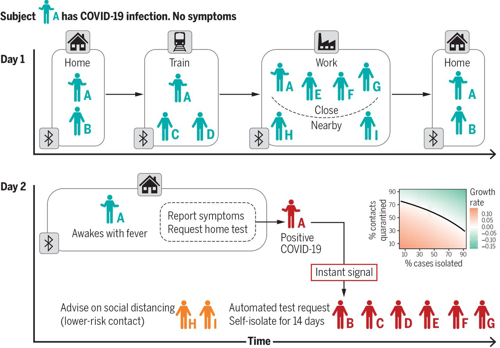
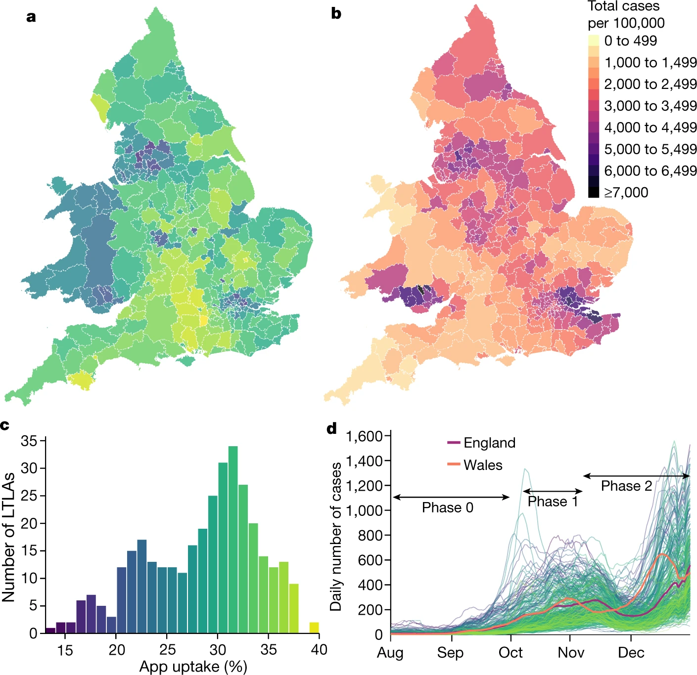

England has experienced a high growth rate of infections caused by the influenza A/H3N2 K clade. Antigenic change from the previously dominant clade, a rapid selective sweep evident in genomic data, and an unusually early start to the season have raised concerns about the potential severity of this year’s influenza season. We found that the peak growth rate of influenza infections and the peak time-varying reproduction number has been largely consistent with previous severe seasons. Substantial immune escape appears to be unlikely given current epidemiological trends. In almost all scenarios, an earlier and faster epidemic growth rate leads to earlier depletion of susceptibles with a dampening effect due to the half term school holiday. This rapid analysis is intended to support situational awareness. To support understanding and exploration of model outputs, an interactive visualisation tool was developed and made available online.
Small natural populations are increasingly exposed to environmental shifts that are unprecedented in speed and intensity on population-genetics timescales. If populations persist, adaptation to these abrupt changes is expected to leave localized footprints of selection around the loci contributing to the adaptive response, in contrast to genome-wide signals produced by demography alone. Here we provide an explicit theoretical description of genetic footprints expected under rapid adaptation from standing genetic variation. We derive exact analytical results for how single-locus sweeps and polygenic shifts driven by sudden environmental changes distort the site-frequency spectrum (SFS) of linked mutations, and we link these distortions to the expected changes in standard diversity measures and neutrality statistics. Our results provide a guideline for detecting and interpreting genetic signatures of adaptation to extreme events, including those associated with climate change, particularly in small populations where adaptation or evolutionary rescue often proceed quickly and from preexisting variation.
Estimators of genetic diversity and neutrality tests derived from the site frequency spectrum (SFS), are designed to be interpreted relative to a baseline defined by the standard neutral SFS. In genomic regions strongly linked to a polymorphic structural variant (SV), deviations from these baselines occur even under strict neutrality, distorting the SFS for linked neutral mutations. We provide analytical formulae for the expected SFS of single nucleotide polymorphisms conditional on neutral linked polymorphic SVs, including inversions, deletions, insertions, and introgressions. We quantify the resulting bias in standard diversity estimators and neutrality tests. Finally, we discuss approaches to build corrected estimators of diversity and neutrality tests that are unbiased/centered after accounting for the presence and frequency of the SV.
Preferential attachment is the most popular mechanism to explain scale-free degree distributions in growing networs. However, realistic network models should also include complex connectivity structures and different types of heterogeneity, such as multiple node types, multiple layers, and hyperlinks with multiple orders (hypergraphs). Here we study arbitrarily complex network models growing by a linear preferential attachment mechanism. We show how all these models have a multi-power-law hyperdegree distribution. For generic connectivity structures, the exponent of the power-law distribution is universal for all layers and all orders of hyperlinks, and it depends exclusively on the type of node.
For the last 3 decades, the standard model for phylogenetics has included the Gamma4 model of site heterogeneity. We show that this model has a fundamental issue of bias in branch lengths, and that the inferred length of a branch increases with the number of tips present in other parts of the tree. The problem originates from the equally sized rate classes. We recommend that the use of Gamma4 and other models based on equal rate classes be discontinued.
For many infectious diseases, transmission occurs when individuals are in close proximity for a sufficient time and through highly structured social contact networks. Data on the properties of these networks, including their temporal and spatial structures, how pathogens spread in them, and how interventions might alter this spread are scarce or inconsistent and seldom incorporate behavioural features. We propose a solution that leverages mobile technology to measure contact networks across social settings, environmental conditions and various contexts, while explicitly integrating behavioural data.
Perspective on the potential applications of AI to infectious diseases.
Unprecedented epidemic monitoring of transmissions during Euro 2021 and other events. Featured on the cover of Science.
First proposal of measures of incompatibility/distance between phylogeographies.
First high-resolution analysis of COVID-19 transmissions vs duration/proximity. Key paper for precision epidemiology of respiratory pathogens.
The key paper for the worldwide development of contact-tracing apps during the COVID-19 pandemic. More than 3000 citations.

First solid evaluation of the actual impact of a contact-tracing app. Widely used by governments as reference and benchmark for the effectiveness of national apps.
